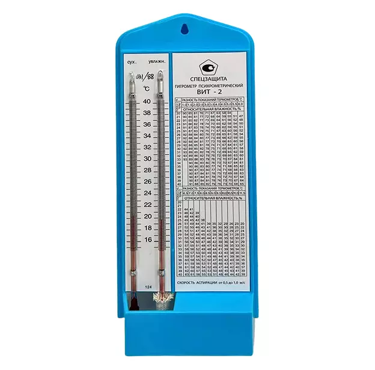

Гигрометр психрометрический ВИТ-2 («Спецзащиты»)
Профессиональный прибор для измерения относительной влажности и температуры в помещениях с повышенным температурным режимом.
артикул: 0004 8 (926) 874 - 74 - 99
8 (926) 874 - 74 - 99
Параметры
Диапазон Т: +15 ... +40°C
Межповерочный интервал: 2 года
Тип: Психрометрический (безртутный)
Заказать
Описание товара
Преимущества модели ВИТ-2 от компании «Спецзащита»:
- Работа в расширенном диапазоне. В отличие от первой модели, ВИТ-2 незаменим в помещениях, где температура воздуха часто поднимается выше +25°C.
- Полный пакет документов. Каждый прибор имеет паспорт с отметкой о первичной поверке и индивидуальный серийный номер. Полностью соответствует требованиям законодательства РФ.
- Высокая информативность. Таблица на корпусе адаптирована под высокие температуры, позволяя быстро получить данные без дополнительных вычислений.
- Автономность и простота. Не требует элементов питания. Работает на основе разности показаний «сухого» и «увлажненного» термометров.
- Безопасные материалы. Легкий и прочный пластиковый корпус, органический наполнитель в капиллярах — прибор безопасен даже при случайном повреждении.
- Выгода и надежность. Оптимальное соотношение цены и долговечности для объектов с жестким температурным контролем.